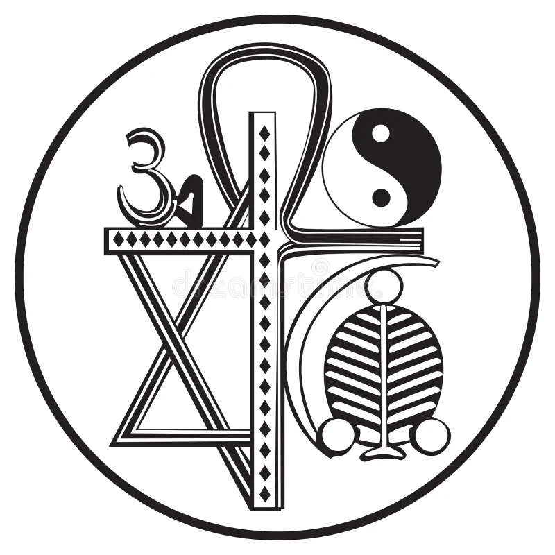
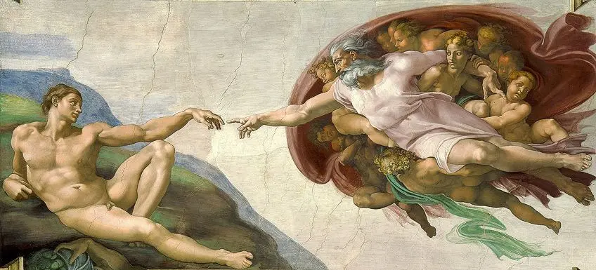
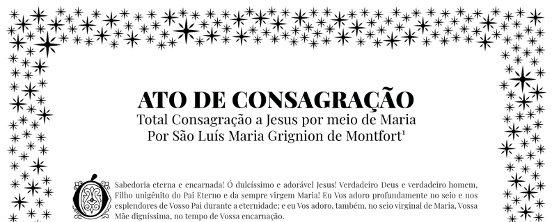
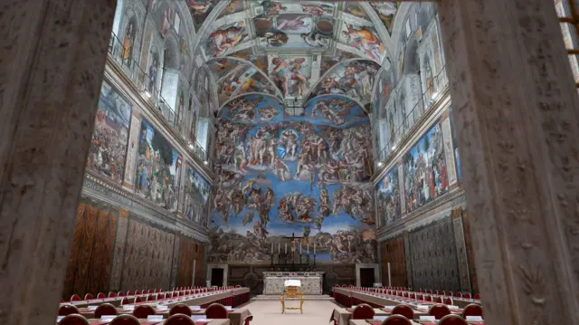

O Sagrado e o Espaço
Apresentação em tópicos sobre a conexão transcendental entre fé e lugar.

Apresentadores e Roteiro
- Marcelo Eduardo C. N. Lins: Abertura & Introdução (A Essência do Sagrado)
- Miguel Wihby: Características (Anatomia de um Espaço Sagrado)
- Carlos Eduardo Jeronimo: O Ritual & O Conclave (Parte 1: Capela Sistina, "Extra Omnes")
- Guilherme Santos: O Conclave (Parte 2: A Fumaça) & Reflexão Final
Marcelo Eduardo C. N. Lins
A Essência do Sagrado
O que define o sagrado e como ele se conecta aos lugares?
Tópicos: O que é Sagrado?
- Qualidade: santo, divino, venerável.
- Distinção: separado do profano/comum.
- Universalidade: presente em diversas culturas.
- Vínculo Espacial: manifesta-se em locais específicos.

Miguel Wihby
Anatomia de um Espaço Sagrado
Elementos que transformam um lugar comum em centro espiritual.
Tópico: Delimitação
↓

- Fronteiras claras (muros, portais, natureza).
- Separação físico-simbólica: sagrado vs. profano.
Tópico: Orientação
↓- Direcionamento simbólico (nascer do sol, cidades sagradas).
- Conexão cósmica ou com ponto de referência divino.
Tópico: Simbolismo
↓
- Elementos que evocam o divino (arquitetura, arte, luz).
- Pontes para a experiência transcendental.
Carlos Eduardo Jeronimo
A Transformação pelo Ritual
Como um espaço se torna sagrado? A alquimia do ritual e da fé.

Profano
Comum, cotidiano
↓
Ação Ritualística
Consagração, Fé, Evento
↓
Sagrado
Transcendente, divino
Estudo de Caso: O Conclave
A Capela Sistina como epicentro ritualístico na escolha papal.
Carlos Eduardo Jeronimo
Parte 1: O Espaço Transformado
Tópico: A Capela Sistina
- Local de votação e expectativa divina.
- História, arte e testemunho do sagrado.
Tópico: "Extra Omnes"
- "Fora todos!": Isolamento físico.
- Sacralização do ambiente para propósito divino.
Guilherme Santos
Parte 2: O Sinal Divino
Tópico: A Fumaça
- Sinal que transcende muros (branca/preta).
- Comunicação da decisão sagrada ao mundo.
Guilherme Santos
Função e Reflexão Final
O propósito dos espaços sagrados e sua relevância em nossas vidas.

Tópicos: O Sagrado no Pessoal
- Necessidade humana de transcendência.
- Criação de espaços sagrados pessoais (altares, natureza).
- Busca por conexão e paz.
Como reconhecemos e criamos o sagrado em nossos espaços?